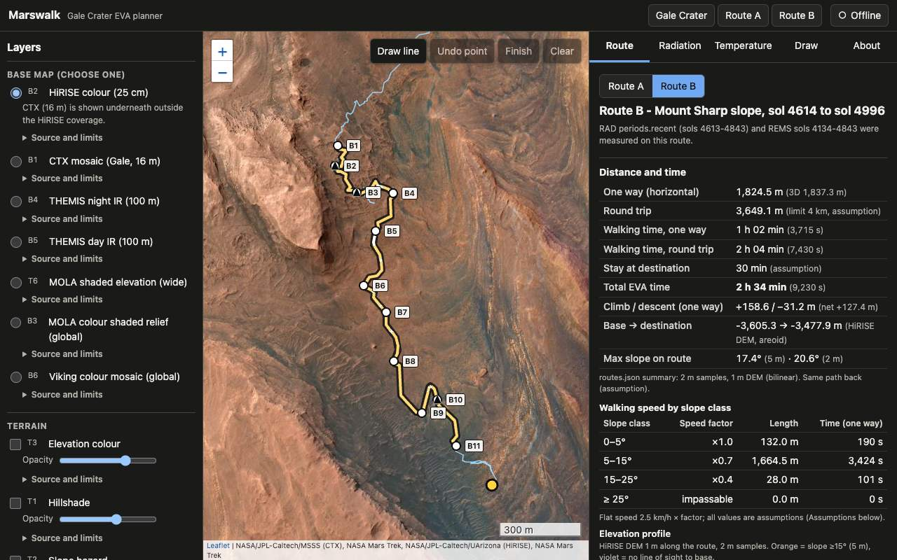
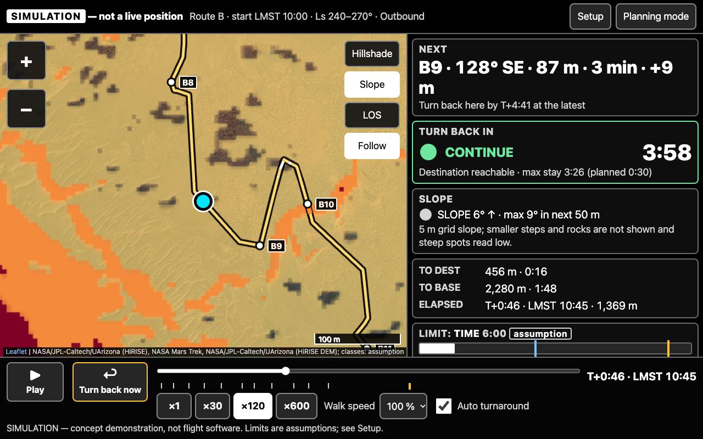
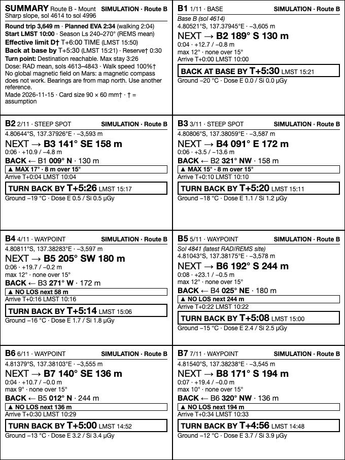

The problem
Astronauts on Mars will explore on foot. Before a walk leaves the base, someone has to answer four questions at once: is the ground too steep, can the crew still talk to the base, how much radiation is there, and how cold is the ground?
Marswalk answers them with real data from the place Curiosity has driven since 2012: orbital terrain and imagery, the rover's own tilt, the RAD radiation detector and the REMS ground-temperature sensor. It turns them into a planning map, a minute-by-minute EVA replay and a printable checklist for the wrist.
Key findings
Numbers are read from the data files the site uses. Walking speed, stay time, the base antenna height and all limits are assumptions, marked as such.
-
Route B: distance and time
One way …, ascent …. A full EVA with a stop at the destination takes … (assumption: walking … on flat ground, slower on slopes, … at the destination).
-
Steep sections
… sections of route B are … or steeper, together …. The steepest point on the 5 m grid is …. The … caution level is an assumption.
-
Line-of-sight gap
For … of route B the walker has no direct line of sight to the base (assumption: … antenna, no relays, no diffraction).
-
Radiation now
Mean dose rate measured by RAD on the rover deck, sols …: detector B (silicon) …, detector E …. At the B rate, one route B EVA gives … (silicon), on the assumed EVA duration. This is the rover-deck value, not the dose inside a suit.
Route A and route B rates were measured … apart (… and …). The difference between them must not be read as an effect of altitude or location; this data cannot separate the two.
-
Transient event, sol 4716
On sol … detector E rose for about … to a maximum of … (sol mean …). It is a transient event; its cause is unconfirmed.
-
Ground temperature swing
Over the most recent Mars year (… full sols), the ground temperature changed by … between night and day on average, and by up to ….
Three tools
-

Planning map
Two walking routes on ground Curiosity drove, with slope, line of sight, radiation and ground temperature from the rover's own instruments.
Open the map -

EVA replay (simulation)
Replay a planned walk minute by minute with turnaround limits, dose, ground temperature and comms warnings.
Open EVA replay -

Cuff checklist
Printable 90 × 60 mm cards for each stop, computed by the same code as the EVA replay.
Open the checklist
How the numbers are checked
Headless Chrome checks and independent recomputation: panel numbers …, EVA self-test …, cuff checklist …, offline …, route validation ….
Limits
- Radiation is a time record at the rover's position, not a map of radiation across the crater.
- The EVA replay moves the walker along the planned route; it is a simulation, not live positioning.
- Walking speed, time limits, the dose budget and the temperature line are planning assumptions, not standards.
More
- Method: data processing, assumptions, validation and limits
- Electronics: what the measured dose and temperature cycles mean for equipment
- Sources: missions, data products and licences
Uses NASA mission data (Curiosity RAD, REMS and rover records; orbital imagery and terrain). Built with Claude Code (Anthropic).